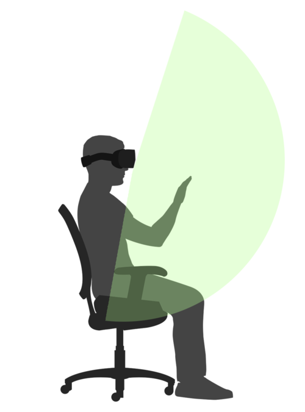
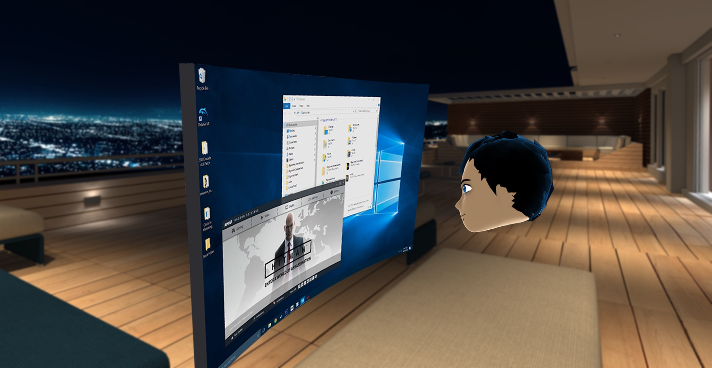

CS 491 - Student Choice -- Leap Motion
Leap Motion
Leap Motion. What is it? Leap motion is an advanced hand tracking technology that is used in both AR and VR as shown through many examples found here. This is unique technology that has been around much longer than the Vive and Oculus have been around. This is a clean way to provide hand tracking technology, within a close proximity, of the device itself.
Leap Motion itself is a small container with two cameras to sense depth within a given field that is in its view.

Leap Motion can be used in many ways that make it easier to interect with object within VR and AR. If you back to the examples, you can see some really cool integrations of the technology in AR and VR experiences.
To go into further discussion about the Leap Motion, lets talk about the hardware behind it. The hardware behind the tiny device is that it consists of two cameras that are used to track the visible objects, the hands that are in use, as well as three infrared LEDs that are used to track infrared light with a wavelength of 850nm. With both of the two normal cameras and the three infrared lights, the device, without any additional software, can track roughly two feet. I say without any additional software because Leap made new software that can extend the range of around two feet to now around two and a half feet. The change was from 60 to 80 cm if that is easier to visualize. The current distance is limited to that because of how infrared is reflected off of the user's hands and the cameras, and the software, have a hard time tracking beyond that distance at an accurate rate. That is also a problem with the hardware because the LED emitters are limited to pulling as much data as a USB from a laptop can provide, being that the USB needs to provide power as well as for data transfer between the Leap Motion itself and the computer. An improvement to this would be to update the USB A to USB C and that would provide 40 Gbps of data transfer which would, in theory, allow for more power for the emitters as well as the cameras that are being used to read the infrared. But with the current hardware, the device can read about two feet from the top of the device, about two feet from each side at a 150 degree angle from the top of the device, and about two feet deep on each side.
Talking more about the software that was made by Leap to help extend the range of the Motion itself, the software was built to enable a more natural feel with empty space. The software has a more advanced set of algorithms to read and interpret the user's hands in empty space. The new software comes with many new advancements such as: lower latency, longer range, better hand recognition to track more joints in the hands, faster hand recognition for a less laggy fealing, removing cluttering of what the Motion sees, removed ambient lights that conflict with the infrared and the cameras, as well as better runtime for applications with an updated API. The updated software allows for a greater interaction between hands free controllers and a VR/AR system. The software is currently still in beta under the name Orion. The video will show a demo at 3:46.
As previously mentioned, the Orion software update greatly increased the ambient occlusion within tracking of the hands. The way that the software initially worked, before the Orion update, was that it uses the two cameras, which are fisheye lens to allow for the greater degree of camera range, and used that to interpret the three-dimentional space that it sees. The camera renders what it sees in grayscale to be able to see the infrared and differentiate background and foreground. The Orion update allowed for a greater depth for the grayscale images that were being made. This allowed for a faster recognition of the hands as well as the addition of the tracking of arms as well. One of the many updates included an update to the cameras' distortion fix. Naturally, fisheye lens cause distortion to occur in order to allow for a greater field of vision. The software had been updated to allow for a better distortion fix that allowed the grayscale fisheye images to look like natural grayscale images.
As mentioned, the Orion update allowed for a better infrared tracking to occur. This allowed for faster recognition as well as a more accurate recognition.
Here in the video at 54 seconds, the Orion update allowed for a more natural finger prediction. Since the Leap Motion can be used in many different angles, sometimes fingers will be blocked by different parts of your body. The Orion update allowed for a better prediction to occur for fingers that are directly hidden from the Leap Motion itself.
Skipping forward in the video to 1:52, we can see that the Orion update allowed for a better detection of the hand against various backgrounds. Since the technology is using infrared, the cameras pickup what is reflected back to it from the infrared emitters on the device itself. In the video, we saw that whatever is reflected also shows a very similar color because of the grayscale, but the Orion update allows for better tracking with a better use of depth from the two cameras that are built into the hardware.
AR/VR action
The Leap Motion is great for controller-less interaction for Virtual and Augmented Reality. The Leap Motion was one of many different Mixed Reality tools that were made, but the Leap Motion was advanced to work with the HTC Vive and the Oculus Rift. Leap has also made their own version of a VR headset with a built-in Motion. The Leap Motion can be used in many ways with VR headsets: the Motion can be used on a table and look up to track motion that way, or be used in a way that it is attached to the headset and be used like a third eye for the VR headset.
The Leap Motion has a lot of different tools that can be found here. With the Orion software that is available for the Leap Motion and the VR headsets that are out there, there are a bunch of projects that utilize both to have a unique experience without controllers. One of the cool tools, can be found here, and this tool shows different ways that the Motion can be setup with the VR headsets that are out there.
The Leap Motion also has another cool tool that allows people to interact with a Virtual Machine inside of a VR headset with control from the Leap Motion. This project can be found here. This project is really cool because it allows you to share a workspace with friends in virtual space!
